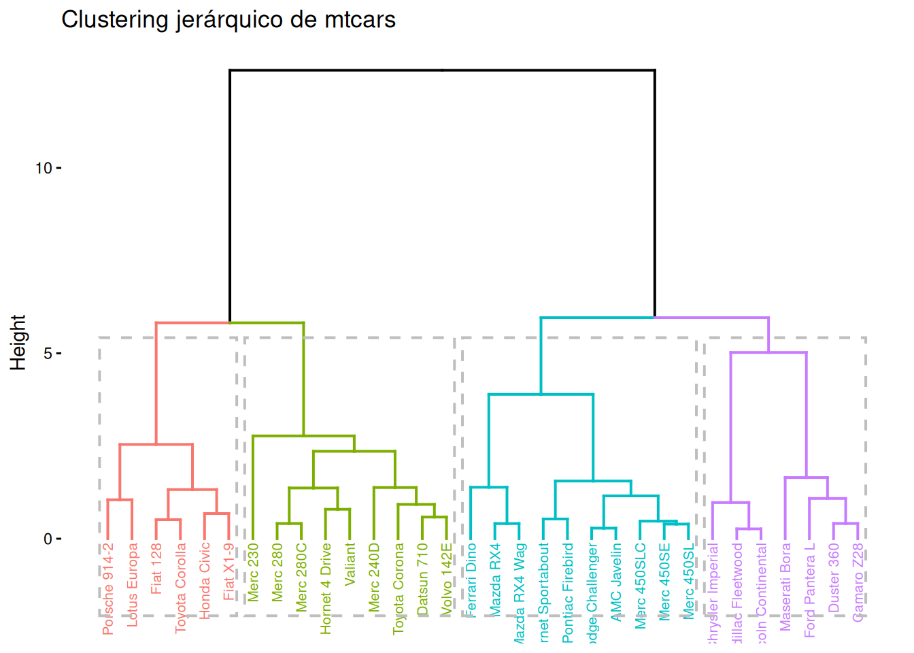
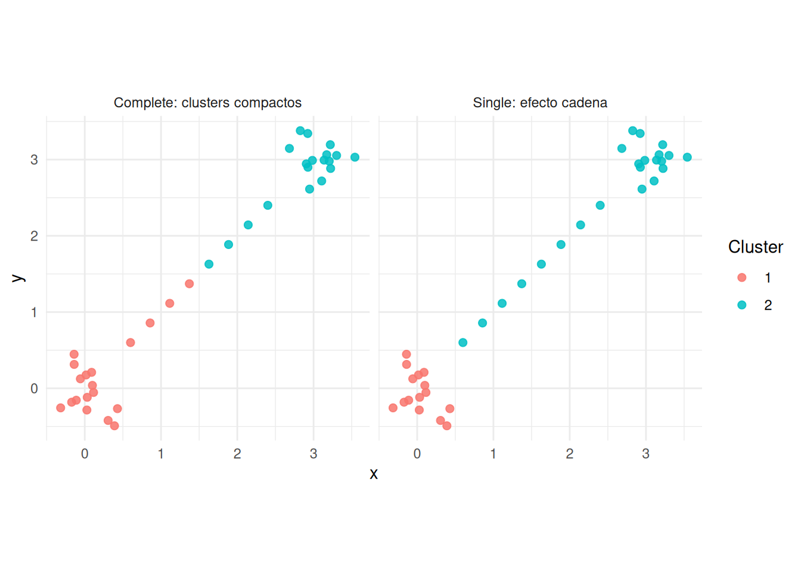
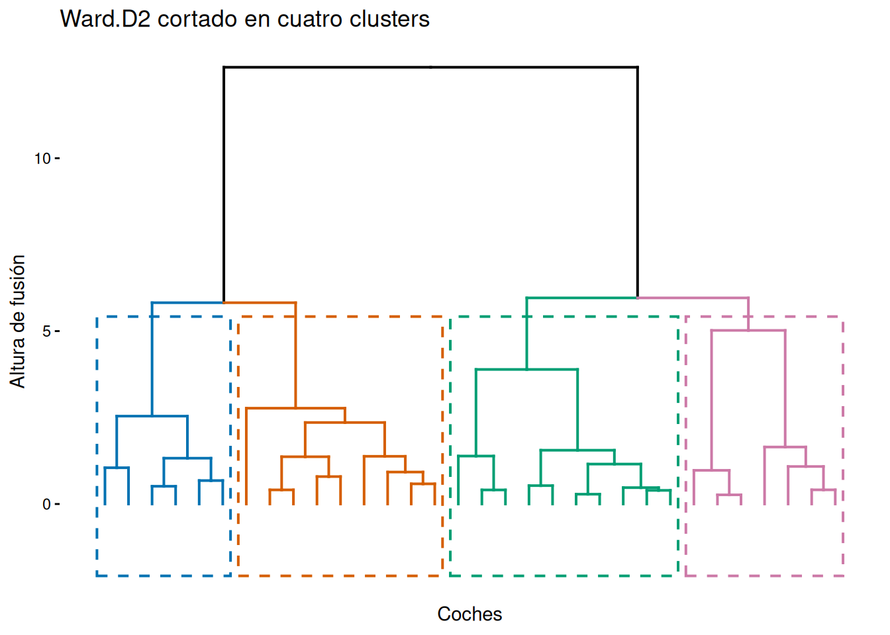
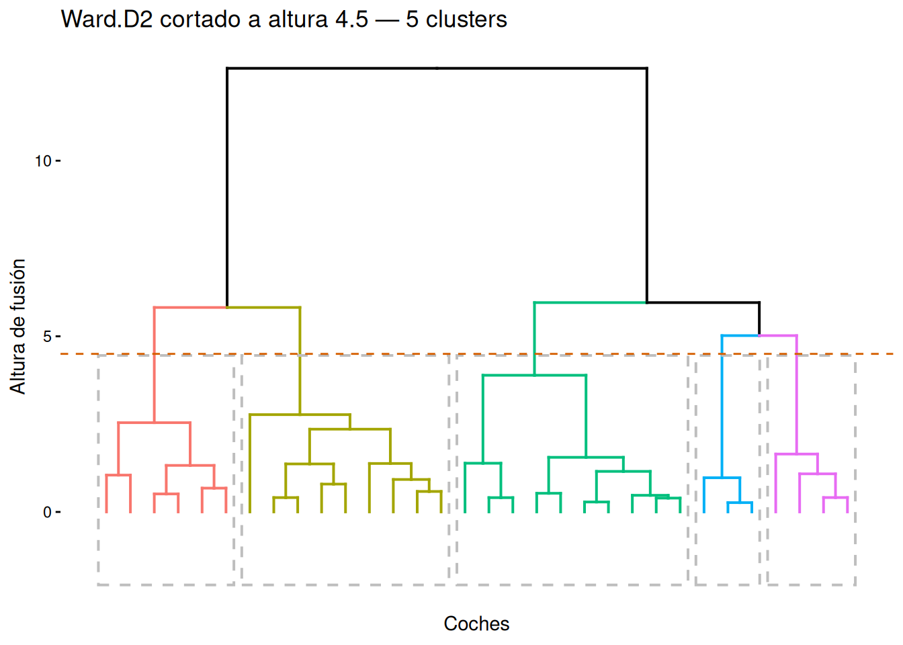
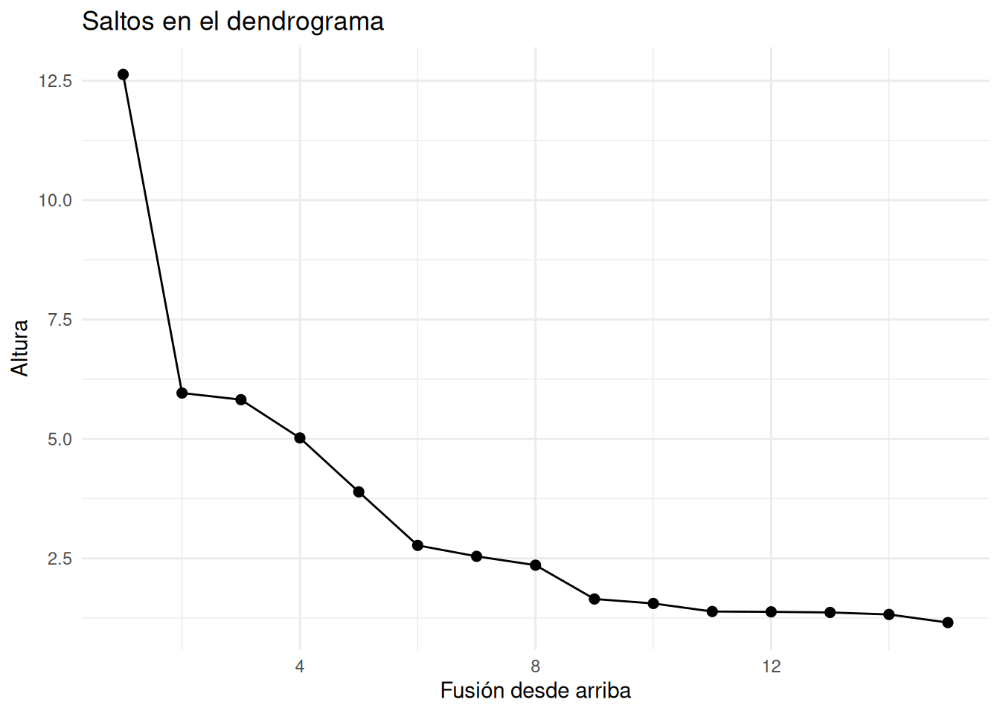
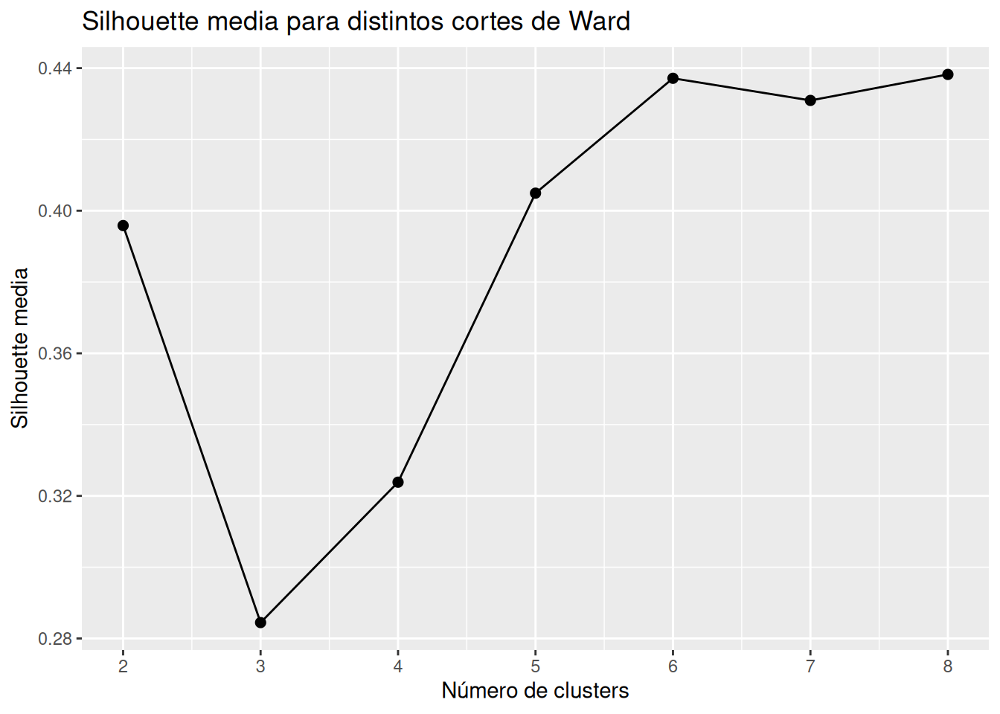
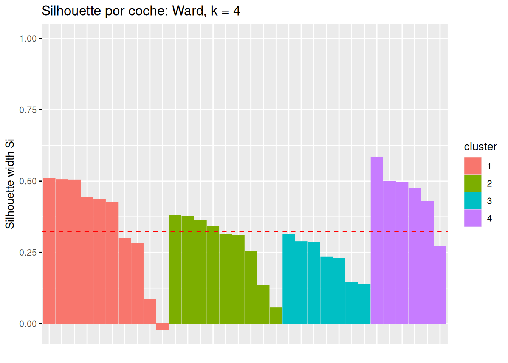
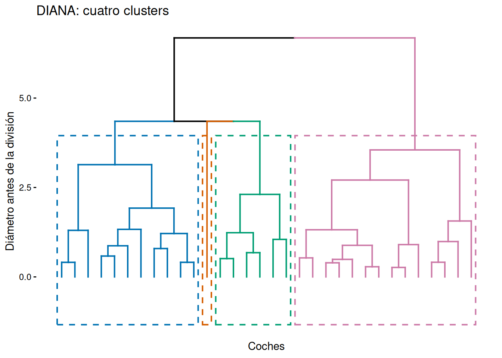
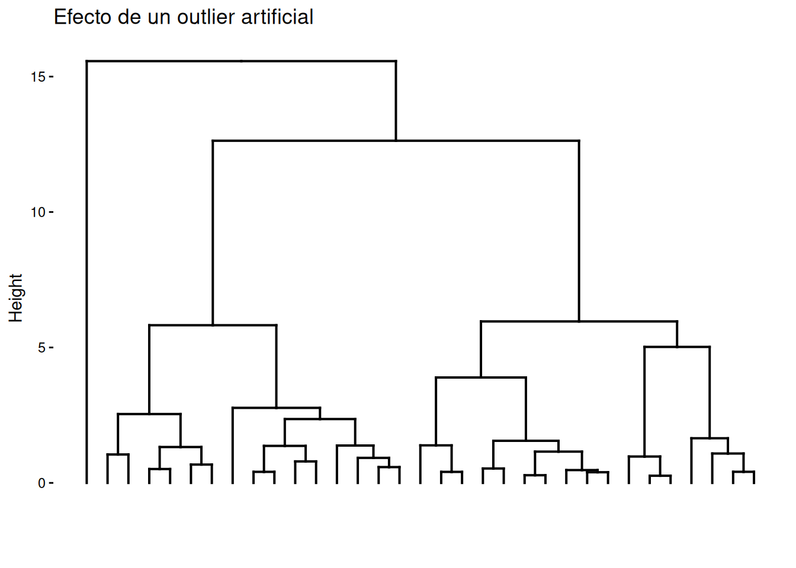

Código
library(tidyverse)
library(knitr)library(tidyverse)
library(knitr)Queremos agrupar coches de mtcars según consumo, cilindrada, potencia, peso y aceleración. No sabemos cuántos grupos habrá, así que una jerarquía puede ayudarnos a explorar particiones posibles: dos grupos muy generales, tres perfiles más finos, cuatro segmentos interpretables, etc.
El clustering jerárquico no produce solo una partición. Produce una historia de fusiones o divisiones. Esa historia se representa mediante un dendrograma.
Un dendrograma no descubre una verdad única; muestra una jerarquía inducida por una distancia y un criterio de enlace.
El clustering jerárquico construye una secuencia de agrupaciones anidadas. Si \(C_a\) y \(C_b\) son dos clusters, una jerarquía impone que al fusionarse forman un nuevo cluster \(C_a \cup C_b\) que contiene completamente a los anteriores.
Hay dos familias principales:
El enfoque aglomerativo es más habitual porque es conceptualmente simple, está ampliamente implementado y permite probar fácilmente distintos criterios de enlace.
El algoritmo necesita:
La distancia entre clusters se denomina linkage o método de enlace.
vars_mtcars <- mtcars[, c("mpg", "disp", "hp", "wt", "qsec")]
X <- scale(vars_mtcars)
d <- dist(X)
hc_ward <- hclust(d, method = "ward.D2")
factoextra::fviz_dend(
hc_ward,
k = 4,
rect = TRUE,
cex = 0.55,
main = "Clustering jerárquico de mtcars"
)
La altura de cada fusión depende de la distancia y del enlace. Si cambiamos cualquiera de esos dos elementos, el dendrograma puede cambiar.
El procedimiento básico es:
El paso decisivo es el cuarto: actualizar distancias. Ahí entra el método de enlace.
El enlace simple define la distancia entre dos clusters como la menor distancia entre un punto de un cluster y un punto del otro:
\[ D_{single}(A,B)=\min_{i \in A, j \in B} d(x_i,x_j). \]
Intuición: dos clusters se consideran cercanos si existe al menos un puente entre ellos. Por eso single linkage puede detectar formas alargadas o no esféricas, pero también puede sufrir el efecto de encadenamiento: una secuencia de puntos intermedios puede unir regiones que visualmente parecen distintas.
hc_single <- hclust(d, method = "single")
factoextra::fviz_dend(hc_single, show_labels = FALSE, main = "Single linkage")
Ventaja principal: permite clusters no compactos. Riesgo principal: encadenamiento por puntos intermedios u outliers.
El enlace completo usa la mayor distancia entre puntos de los dos clusters:
\[ D_{complete}(A,B)=\max_{i \in A, j \in B} d(x_i,x_j). \]
Intuición: dos clusters solo se fusionan si todos sus puntos están relativamente cerca. Favorece grupos compactos y con diámetro pequeño.
hc_complete <- hclust(d, method = "complete")
factoextra::fviz_dend(hc_complete, show_labels = FALSE, main = "Complete linkage")
Ventaja principal: evita cadenas largas y produce clusters más compactos. Riesgo principal: puede romper grupos alargados que, sustantivamente, podrían tener sentido como una misma estructura.
El enlace promedio define la distancia entre clusters como la media de todas las distancias cruzadas:
\[ D_{average}(A,B)=\frac{1}{|A||B|}\sum_{i \in A}\sum_{j \in B} d(x_i,x_j). \]
Intuición: no se fija solo en el par más cercano ni en el par más lejano. Resume la separación media entre ambos clusters.
hc_average <- hclust(d, method = "average")
factoextra::fviz_dend(hc_average, show_labels = FALSE, main = "Average linkage")
Ventaja principal: suele ser más estable que single y menos rígido que complete. Riesgo principal: puede ocultar subestructuras si la media suaviza diferencias importantes.
El enlace por centroides compara los centros de los clusters:
\[ D_{centroid}(A,B)=d(\bar{x}_A,\bar{x}_B), \]
donde \(\bar{x}_A\) y \(\bar{x}_B\) son los vectores de medias de cada cluster.
Su interpretación es cercana a comparar perfiles medios. Sin embargo, puede producir inversiones en el dendrograma: una fusión posterior puede aparecer a menor altura que una anterior. Por eso se usa con más cautela en cursos introductorios.
Ward no define la distancia solo como proximidad entre puntos, sino como pérdida de homogeneidad al fusionar clusters. En la versión habitual ward.D2, se fusionan los clusters que producen el menor aumento de suma de cuadrados interna:
\[ \Delta(A,B)=W(A \cup B)-W(A)-W(B), \]
donde
\[ W(A)=\sum_{i \in A}\lVert x_i-\bar{x}_A\rVert^2. \]
Para distancia euclídea, este aumento puede escribirse como:
\[ \Delta(A,B)=\frac{|A||B|}{|A|+|B|}\lVert \bar{x}_A-\bar{x}_B\rVert^2. \]
Ward favorece clusters compactos y relativamente equilibrados. Es una opción muy usada cuando se trabaja con variables numéricas escaladas y se busca una partición interpretable.
factoextra::fviz_dend(hc_ward, show_labels = FALSE, main = "Ward.D2")
Ward tiene sentido principalmente con distancia euclídea. Usarlo con otras disimilitudes puede producir resultados difíciles de interpretar.
metodos <- c("single", "complete", "average", "ward.D2")
arboles <- setNames(
lapply(metodos, function(m) hclust(d, method = m)),
metodos
)
plots <- lapply(metodos, function(m) {
factoextra::fviz_dend(
arboles[[m]],
show_labels = FALSE,
main = m
)
})
gridExtra::grid.arrange(grobs = plots, ncol = 2)
Los cuatro dendrogramas parten de la misma matriz de distancias, pero inducen jerarquías distintas. Esto no es un problema del método; es una señal de que el enlace forma parte de la pregunta.
La inspección visual permite detectar diferencias grandes, pero no proporciona una medida única de cuánto se parecen dos jerarquías. La gamma de Baker resume su grado de asociación sin depender de la escala numérica de las alturas (Baker 1974).
Sea \(T\) un árbol con \(n\) individuos. Para cada par \((i,j)\) definimos
\[ r_T(i,j)=\max\left\{k:\ i\text{ y }j\text{ pertenecen al mismo cluster al cortar }T\text{ en }k\text{ grupos}\right\}. \]
El valor \(r_T(i,j)\) indica lo pronto que se unen ambos individuos al recorrer la jerarquía desde \(n\) grupos hacia uno. Un valor grande significa que se fusionan pronto, cuando todavía quedan muchos clusters; un valor pequeño significa que solo coinciden en niveles muy generales del árbol.
Reunimos estos valores para los \(\binom{n}{2}\) pares de individuos. La implementación de dendextend calcula la gamma de Baker como la correlación de Spearman entre los niveles de unión de los dos árboles:
\[ \gamma_B(T_1,T_2) = \operatorname{cor}_{S} \left( \{r_{T_1}(i,j)\}_{i<j}, \{r_{T_2}(i,j)\}_{i<j} \right). \]
Por tanto:
La gamma no compara las alturas de las ramas. Dos árboles pueden tener gamma próxima a uno aunque las fusiones ocurran a alturas numéricas distintas. Tampoco es un porcentaje de clusters iguales ni garantiza que las particiones coincidan para un valor concreto de \(k\).
gamma_baker <- matrix(
1,
nrow = length(metodos),
ncol = length(metodos),
dimnames = list(metodos, metodos)
)
for (i in seq_len(length(metodos) - 1)) {
for (j in (i + 1):length(metodos)) {
gamma_ij <- dendextend::cor_bakers_gamma(
arboles[[i]],
arboles[[j]]
)
gamma_baker[i, j] <- gamma_ij
gamma_baker[j, i] <- gamma_ij
}
}
kable(
round(gamma_baker, 4),
caption = "Gamma de Baker entre métodos de enlace"
)| single | complete | average | ward.D2 | |
|---|---|---|---|---|
| single | 1.0000 | 0.4146 | 0.6235 | 0.4112 |
| complete | 0.4146 | 1.0000 | 0.6845 | 0.9997 |
| average | 0.6235 | 0.6845 | 1.0000 | 0.6870 |
| ward.D2 | 0.4112 | 0.9997 | 0.6870 | 1.0000 |
En estos datos, complete y Ward producen órdenes de unión casi idénticos, con una gamma cercana a \(1\). Average mantiene una semejanza intermedia con los demás métodos. Single presenta valores alrededor de \(0.41\) frente a complete y Ward: el criterio del vecino más próximo altera de forma apreciable la jerarquía, en consonancia con su tendencia al encadenamiento.
La gamma de Baker sirve para comparar árboles completos. Si solo interesa una partición con \(k\) grupos, conviene complementarla con una comparación de las asignaciones, porque una gamma alta puede ocultar diferencias justo en el nivel elegido.
particiones <- data.frame(
single = cutree(arboles$single, k = 4),
complete = cutree(arboles$complete, k = 4),
average = cutree(arboles$average, k = 4),
ward = cutree(arboles$ward.D2, k = 4)
)
kable(table(particiones$single, particiones$ward), caption = "Single frente a Ward")| 1 | 2 | 3 | 4 |
|---|---|---|---|
| 10 | 8 | 0 | 6 |
| 0 | 0 | 4 | 0 |
| 0 | 1 | 0 | 0 |
| 0 | 0 | 3 | 0 |
kable(table(particiones$complete, particiones$ward), caption = "Complete frente a Ward")| 1 | 2 | 3 | 4 |
|---|---|---|---|
| 10 | 0 | 0 | 0 |
| 0 | 9 | 0 | 0 |
| 0 | 0 | 7 | 0 |
| 0 | 0 | 0 | 6 |
Las tablas cruzadas muestran dos situaciones distintas. Single cambia la partición final respecto a Ward. Complete y Ward coinciden para \(k=4\), aunque sus alturas no sean iguales. Una coincidencia en un único corte no implica que los árboles sean idénticos; la gamma aporta una comparación de todos los niveles simultáneamente.
Creamos dos nubes compactas unidas por puntos intermedios. Este ejemplo ilustra el encadenamiento de single linkage.
set.seed(123)
nube1 <- matrix(rnorm(30, mean = 0, sd = 0.25), ncol = 2)
nube2 <- matrix(rnorm(30, mean = 3, sd = 0.25), ncol = 2)
puente <- cbind(seq(0.6, 2.4, length.out = 8), seq(0.6, 2.4, length.out = 8))
datos_puente <- rbind(nube1, puente, nube2)
colnames(datos_puente) <- c("x", "y")
d_puente <- dist(datos_puente)
cl_single <- cutree(hclust(d_puente, method = "single"), k = 2)
cl_complete <- cutree(hclust(d_puente, method = "complete"), k = 2)
tibble(
x = datos_puente[, 1],
y = datos_puente[, 2],
single = factor(cl_single),
complete = factor(cl_complete)
) |>
pivot_longer(c(single, complete), names_to = "metodo", values_to = "cluster") |>
mutate(metodo = recode(metodo, single = "Single: efecto cadena", complete = "Complete: clusters compactos")) |>
ggplot(aes(x, y, color = cluster)) +
geom_point(size = 2, alpha = 0.85) +
facet_wrap(~metodo) +
coord_equal() +
labs(x = "x", y = "y", color = "Cluster") +
theme_minimal()
Single tiende a usar los puntos del puente para unir regiones. Complete exige mayor compacidad y corta de otra forma.
La altura de una fusión representa la disimilitud a la que se unen clusters. Fusiones a baja altura sugieren grupos cercanos; saltos grandes pueden indicar cortes razonables.
No debe interpretarse la distancia horizontal entre etiquetas. El dendrograma es una representación del orden de fusiones, no un mapa euclídeo. Dos etiquetas visualmente próximas en el eje horizontal no tienen por qué ser más parecidas.
Cortar el árbol transforma la jerarquía en una partición. cutree() permite especificar el número de grupos, k, o una altura, h, pero ambas operaciones se formulan de manera diferente.
Un árbol aglomerativo con \(n\) individuos comienza con \(n\) clusters. Cada fusión reduce su número en uno. Por tanto, cutree(arbol, k = k) sigue la secuencia almacenada en arbol$merge y conserva las primeras \(n-k\) fusiones. No vuelve a ejecutar el clustering ni busca una nueva partición óptima: detiene la jerarquía ya construida cuando quedan exactamente \(k\) grupos.
Para \(k=4\) en mtcars, se han aceptado \(32-4=28\) fusiones. fviz_dend() colorea las ramas y dibuja los rectángulos correspondientes a esa partición:
k_corte <- 4
grupos4 <- cutree(hc_ward, k = k_corte)
colores_clusters <- c("#0072B2", "#D55E00", "#009E73", "#CC79A7")
factoextra::fviz_dend(
hc_ward,
k = k_corte,
k_colors = colores_clusters,
show_labels = FALSE,
rect = TRUE,
rect_border = colores_clusters,
rect_fill = FALSE
) +
labs(
title = "Ward.D2 cortado en cuatro clusters",
x = "Coches",
y = "Altura de fusión"
)
tibble(cluster = grupos4) |>
count(cluster, name = "numero_de_coches") |>
kable(caption = "Tamaño de los clusters para k = 4")| cluster | numero_de_coches |
|---|---|
| 1 | 10 |
| 2 | 9 |
| 3 | 7 |
| 4 | 6 |
aggregate(vars_mtcars, by = list(cluster = grupos4), mean) |>
kable(digits = 2, caption = "Perfil medio de los cuatro clusters")| cluster | mpg | disp | hp | wt | qsec |
|---|---|---|---|---|---|
| 1 | 17.92 | 267.44 | 158.50 | 3.41 | 17.02 |
| 2 | 21.04 | 161.64 | 101.89 | 3.05 | 19.66 |
| 3 | 13.41 | 390.57 | 248.43 | 4.31 | 16.22 |
| 4 | 30.07 | 86.65 | 75.50 | 1.87 | 18.40 |
La tabla de medias ayuda a interpretar los clusters. Conviene volver a las variables originales para comunicar resultados, aunque la distancia se haya calculado con variables escaladas.
Si las alturas de fusión son crecientes y no hay empates en la frontera, el corte por \(k\) sí puede representarse mediante una línea horizontal. Si \(h_m\) es la altura de la fusión \(m\), cualquier valor \(h^*\) que satisfaga
\[ h_{n-k}\leq h^* < h_{n-k+1} \]
produce los mismos \(k\) grupos: se aceptan las primeras \(n-k\) fusiones y se excluye la siguiente.
n_individuos <- length(hc_ward$order)
ultima_aceptada <- n_individuos - k_corte
primera_excluida <- ultima_aceptada + 1
h_equivalente <- mean(
hc_ward$height[c(ultima_aceptada, primera_excluida)]
)
tibble(
frontera = c("Última fusión aceptada", "Primera fusión excluida"),
paso = c(ultima_aceptada, primera_excluida),
altura = hc_ward$height[c(ultima_aceptada, primera_excluida)]
) |>
kable(digits = 3, caption = "Frontera del corte con k = 4")| frontera | paso | altura |
|---|---|---|
| Última fusión aceptada | 28 | 5.021 |
| Primera fusión excluida | 29 | 5.822 |
En este caso, una línea a altura 5.421 reproduce el corte en cuatro grupos. Esto es posible porque Ward genera aquí alturas monótonas.
Con cutree(arbol, h = h_corte) se aceptan todas las fusiones cuya altura no supera h_corte. El número de clusters es entonces una consecuencia de la altura elegida y no se fija de antemano. Por ejemplo, una altura de 4.5 produce cinco grupos:
h_corte <- 4.5
grupos_h <- cutree(hc_ward, h = h_corte)
k_h <- n_distinct(grupos_h)
factoextra::fviz_dend(
hc_ward,
k = k_h,
show_labels = FALSE,
rect = TRUE,
rect_fill = FALSE,
color_labels_by_k = TRUE
) +
geom_hline(
yintercept = h_corte,
color = "#D55E00",
linetype = "dashed"
) +
labs(
title = paste(
"Ward.D2 cortado a altura",
h_corte,
"—",
k_h,
"clusters"
),
x = "Coches",
y = "Altura de fusión"
)
El corte por altura pregunta: ¿qué clusters existen antes de permitir fusiones más lejanas que cierto umbral?
El corte por altura solo está bien definido para árboles con alturas monótonas. Métodos como centroid pueden producir inversiones: una fusión posterior aparece por debajo de una anterior. En ese caso cutree(..., h = ...) no puede representar la secuencia mediante una línea horizontal y R devuelve un error. cutree(..., k = ...) sigue siendo posible porque usa el orden de las fusiones, no sus alturas. Además, si varias fusiones tienen exactamente la misma altura, algunos valores de \(k\) pueden no corresponder a ningún corte horizontal, aunque cutree(..., k = ...) sí pueda devolver exactamente ese número de grupos.
La elección de \(k\) puede apoyarse en:
alturas <- rev(hc_ward$height)
tibble(fusion = seq_len(15), altura = alturas[1:15]) |>
ggplot(aes(fusion, altura)) +
geom_line() +
geom_point(size = 2) +
labs(title = "Saltos en el dendrograma", x = "Fusión desde arriba", y = "Altura") +
theme_minimal()
Un salto grande indica que se están fusionando clusters bastante separados. Cortar antes de ese salto puede ser razonable, pero no es una prueba automática.
La silhouette evalúa simultáneamente la cohesión interna de cada cluster y su separación respecto a los demás (Rousseeuw 1987). Para una observación \(i\) perteneciente al cluster \(C_i\), definimos:
\[ a(i)=\frac{1}{|C_i|-1}\sum_{j\in C_i,\,j\neq i}d(i,j), \]
la disimilitud media de \(i\) respecto a su propio cluster. Para cualquier otro cluster \(C\), calculamos
\[ d(i,C)=\frac{1}{|C|}\sum_{j\in C}d(i,j), \]
y conservamos la menor de esas disimilitudes medias:
\[ b(i)=\min_{C\neq C_i}d(i,C). \]
El cluster que alcanza este mínimo es el cluster vecino de \(i\). La anchura silhouette es
\[ s(i)=\frac{b(i)-a(i)}{\max\{a(i),b(i)\}}, \]
con \(-1\leq s(i)\leq 1\). Su interpretación es:
La silhouette usa la misma matriz de disimilitudes con la que queremos juzgar la partición. En este ejemplo evaluamos cortes del árbol de Ward, pero mantenemos d como geometría de referencia:
evaluacion_silhouette <- map_dfr(2:8, function(k) {
grupos_k <- cutree(hc_ward, k = k)
sil_k <- cluster::silhouette(grupos_k, d)
tibble(
k = k,
silhouette_media = mean(sil_k[, "sil_width"]),
silhouette_minima = min(sil_k[, "sil_width"]),
valores_negativos = sum(sil_k[, "sil_width"] < 0),
cluster_mas_pequeno = min(table(grupos_k))
)
})
evaluacion_silhouette |>
ggplot(aes(k, silhouette_media)) +
geom_line() +
geom_point(size = 2) +
scale_x_continuous(breaks = 2:8) +
labs(
title = "Silhouette media para distintos cortes de Ward",
x = "Número de clusters",
y = "Silhouette media"
)
La media permite comparar cortes, pero puede ocultar observaciones problemáticas y favorecer soluciones con grupos pequeños. Por eso conviene revisar también el mínimo, el número de valores negativos y los tamaños:
evaluacion_silhouette |>
mutate(across(starts_with("silhouette"), ~round(.x, 3))) |>
kable(caption = "Diagnóstico silhouette de los cortes de Ward")| k | silhouette_media | silhouette_minima | valores_negativos | cluster_mas_pequeno |
|---|---|---|---|---|
| 2 | 0.396 | -0.257 | 2 | 15 |
| 3 | 0.284 | -0.193 | 2 | 7 |
| 4 | 0.324 | -0.019 | 1 | 6 |
| 5 | 0.405 | -0.019 | 1 | 3 |
| 6 | 0.437 | -0.156 | 1 | 3 |
| 7 | 0.431 | -0.156 | 1 | 1 |
| 8 | 0.438 | 0.000 | 0 | 1 |
Para \(k=4\), el gráfico individual permite localizar coches bien asignados, casos fronterizos y posibles asignaciones dudosas:
silhouette_ward4 <- cluster::silhouette(grupos4, d)
factoextra::fviz_silhouette(
silhouette_ward4,
label = FALSE,
print.summary = FALSE
) +
labs(title = "Silhouette por coche: Ward, k = 4")
En mtcars, la silhouette media sigue mejorando para algunos valores relativamente grandes de \(k\). Eso no obliga a elegir el máximo: con solo 32 coches, una mejora puede conseguirse fragmentando perfiles en clusters demasiado pequeños para la pregunta aplicada. La silhouette es un diagnóstico interno de compacidad y separación, no una prueba de que exista un número verdadero de grupos.
El clustering divisivo empieza con todos los individuos juntos y realiza separaciones sucesivas. Mientras que un método aglomerativo decide qué elementos locales unir, uno divisivo debe resolver dos decisiones: qué cluster abrir y cómo repartir sus observaciones.
Una estrategia divisiva genérica es:
Las primeras divisiones afectan a ramas grandes del dendrograma y son irreversibles. Por eso los métodos divisivos priorizan la estructura global al principio, pero necesitan una regla concreta que evite examinar todas las biparticiones posibles.
DIANA, abreviatura de DIvisive ANAlysis, es el procedimiento divisivo de Kaufman y Rousseeuw (Kaufman y Rousseeuw 1990). Trabaja directamente con una matriz de disimilitudes y construye una jerarquía completa mediante una regla voraz.
En cada etapa procede así:
\[ \operatorname{diam}(C)=\max_{i,j\in C}d(i,j). \]
Dentro del cluster elegido, busca el individuo cuya disimilitud media respecto al resto es mayor. Ese individuo inicia un nuevo grupo, denominado splinter group o grupo escindido. Los demás forman provisionalmente el old party o grupo original.
Para cada individuo \(i\) que permanece en el grupo original \(O\), calcula
\[ \Delta(i)= \frac{1}{|O|-1}\sum_{j\in O,\,j\neq i}d(i,j) - \frac{1}{|S|}\sum_{j\in S}d(i,j), \]
donde \(S\) es el grupo escindido. Si \(\Delta(i)>0\), el individuo está en promedio más lejos del grupo original que del grupo escindido.
Mueve al grupo escindido el individuo con mayor \(\Delta(i)\) positivo, actualiza todas las medias y repite. Cuando ningún valor es positivo, la división queda fijada.
Vuelve a seleccionar, entre los clusters resultantes, el de mayor diámetro. El proceso continúa hasta que todos los individuos quedan aislados.
La regla es local: DIANA no garantiza encontrar, en cada nodo, la mejor bipartición según un criterio global. Sin embargo, evita enumerar las \(2^{|C|-1}-1\) biparticiones posibles de un cluster y proporciona una división reproducible a partir de la disimilitud elegida.
DIANA no pide elegir un linkage, pero no está libre de decisiones. Su resultado depende de las variables, el escalado y la disimilitud. Un outlier puede iniciar pronto un grupo escindido y acabar formando una rama o un cluster de un solo individuo.
mtcarsPasamos a diana() el mismo objeto d usado en el análisis aglomerativo. Así la comparación modifica la dirección y la regla de construcción de la jerarquía, pero conserva la geometría entre coches.
div <- cluster::diana(d)
hc_diana <- as.hclust(div)
grupos_diana4 <- cutree(hc_diana, k = 4)
factoextra::fviz_dend(
hc_diana,
k = 4,
k_colors = colores_clusters,
show_labels = FALSE,
rect = TRUE,
rect_border = colores_clusters,
rect_fill = FALSE,
main = "DIANA: cuatro clusters"
) +
labs(
x = "Coches",
y = "Diámetro antes de la división"
)
Las alturas del dendrograma de DIANA representan los diámetros de los clusters antes de dividirse. Una división a gran altura indica que se está abriendo un grupo muy heterogéneo.
kable(
table(DIANA = grupos_diana4, Ward = grupos4),
caption = "Comparación de los cortes con k = 4"
)| 1 | 2 | 3 | 4 |
|---|---|---|---|
| 3 | 8 | 0 | 0 |
| 7 | 0 | 7 | 0 |
| 0 | 1 | 0 | 0 |
| 0 | 0 | 0 | 6 |
DIANA y Ward no producen aquí la misma partición. En particular, DIANA deja un cluster de un solo coche para \(k=4\). No es necesariamente un error, pero obliga a revisar si se trata de un perfil sustantivamente singular o de una separación dominada por una observación extrema.
El objeto devuelto por diana() incluye el coeficiente divisivo. Sea \(D\) el diámetro del dataset completo y sea \(d_i\) el diámetro del último cluster al que pertenece el individuo \(i\) antes de quedar separado como singleton. El coeficiente es
\[ DC=\frac{1}{n}\sum_{i=1}^{n}\left(1-\frac{d_i}{D}\right). \]
Un valor alto indica que muchos individuos se separan definitivamente cuando los clusters que los contienen tienen un diámetro pequeño respecto al diámetro total. Esto sugiere una estructura jerárquica marcada.
tibble(
medida = c("Diámetro inicial", "Coeficiente divisivo"),
valor = c(max(d), div$dc)
) |>
kable(digits = 3, caption = "Resumen de la jerarquía DIANA")| medida | valor |
|---|---|
| Diámetro inicial | 6.682 |
| Coeficiente divisivo | 0.886 |
En estos datos, el coeficiente divisivo es aproximadamente 0.886. No debe interpretarse como porcentaje de clasificación correcta ni compararse directamente entre datasets de tamaños muy diferentes, porque tiende a crecer con el número de observaciones.
| Aspecto | Aglomerativo | Divisivo |
|---|---|---|
| Punto de partida | Cada individuo es un cluster | Todos los individuos están juntos |
| Decisión local | Qué dos clusters fusionar | Qué cluster dividir y cómo |
| Uso habitual | Muy frecuente | Menos frecuente |
| Interpretación | Construye similitudes locales hacia grupos grandes | Busca separaciones globales hacia grupos pequeños |
| Ventaja | Simple, disponible y fácil de comparar por linkage | Puede captar separaciones globales fuertes desde el inicio |
| Desventaja | Las primeras fusiones no se deshacen | Dividir bien puede ser computacional y conceptualmente más difícil |
Ninguno domina siempre. Aglomerativo suele ser más cómodo para exploración inicial. Divisivo puede ser atractivo si sospechamos que hay grandes separaciones globales y queremos que aparezcan desde el principio.
En clustering jerárquico, una decisión temprana suele ser irreversible. Si dos observaciones se fusionan al principio, permanecerán juntas en niveles superiores. Esto hace que outliers, errores de medición o una mala distancia puedan afectar a toda la jerarquía.
Además, el coste computacional crece con el número de observaciones, porque hay que mantener y actualizar muchas distancias. Para datasets grandes, puede ser necesario muestrear, usar métodos aproximados o aplicar clustering a coordenadas reducidas.
El resultado cambia si modificamos variables, escalado, distancia o enlace. También puede ser sensible a outliers, que generan fusiones tardías y ramas muy separadas.
X_out <- rbind(X, outlier = rep(5, ncol(X)))
hc_out <- hclust(dist(X_out), method = "ward.D2")
factoextra::fviz_dend(hc_out, show_labels = FALSE, main = "Efecto de un outlier artificial")
La rama aislada del outlier no debe interpretarse como un cluster sustantivo sin revisar su origen.
El clustering jerárquico permite explorar agrupaciones anidadas. Single, complete, average, centroid y Ward traducen ideas distintas de proximidad entre clusters. El valor del dendrograma está en combinar distancia, enlace, corte del árbol y caracterización posterior de los grupos.
mtcars sin escalar y compara el dendrograma.mtcars y compara el resultado.mtcars usando variables escaladas.